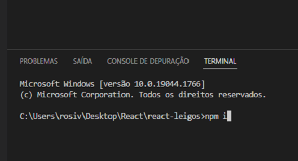

Introdução
O React é uma biblioteca (alguns chamam de Framework) JavaScript de código aberto com foco em criar interfaces de usuário em páginas web. É mantido pelo Facebook, Instagram, outras empresas e uma comunidade de desenvolvedores individuais. É utilizado nos sites da Netflix, Imgur, Feedly, Airbnb, SeatGeek, HelloSign, Walmart e outros.
O React é uma biblioteca front-end e tem como um de seus objetivos facilitar a conexão entre diferentes partes de uma página, portanto seu funcionamento acontece através do que chamamos de componentes.
Em outras palavras, podemos imaginar que o React divide uma tela em diversos componentes para, então, trabalhar sobre eles de maneira individual.
Os componentes são utilizados para reaproveitamento de código e padronização de interface.
Programas que devemos instalar para começar a usar o React
VSCode - O Visual Studio Code é um editor de código-fonte desenvolvido pela Microsoft para Windows, Linux e macOS.
Site do download: https://code.visualstudio.com/Download
Tutorial de como baixar: https://www.youtube.com/watch?v=oQiytM6UJrI&ab_channel=CanaldoBog%C3%A9a
Node.js - Node.js é um software de código aberto, multiplataforma, baseado no interpretador V8 do Google e que permite a execução de códigos JavaScript fora de um navegador web.
Site do download: https://nodejs.org/en/download/
Tutorial de como baixar: https://www.youtube.com/watch?v=65gksI59EIY&t=181s&ab_channel=ProgramadorViking
IMPORTANTE: Para verificarmos se o node foi instalado corretamente, devemos abrir o CMD (Prompt de Comando, caso você esteja usando Windows) e digitar o comando node -v e teclar Enter. Caso apareça a versão, é sinal que deu tudo certo.
O que devo saber para usar o React ?
É recomendável ter uma noção básica de Html, Css e JavaScript. Caso não possua tais conhecimentos, deixaremos links de textos e vídeos a respeito dos assuntos de Html, Css e JavaScript que serão necessários para o entendimento da biblioteca React.
Alguns assuntos importantes de JavaScript:
➜ Estrutura de condição (if else, switch case, operador ternário)
➜ Estrutura de repetição (for, while, do while)
➜ Básico de Objetos
➜ Funções
➜ Manipulação de DOM
Deixaremos aqui o link de um minicurso sobre esses principais assuntos em JavaScript. São apenas 16 vídeos de 5 a 10 minutos cada.
Caso não entenda bem todos os assuntos abordados no minicurso, não se preocupe. Sabendo apenas o básico de estruturas condicionais, estruturas de repetição, o básico de objetos e funções, já é possível entender os conceitos que abordaremos sobre React.
Criando o Primeiro App
Primeiramente iremos criar uma pasta na área de trabalho (Desktop).
Em seguida abriremos o CMD (Prompt de Comando) e digitaremos alguns comandos.
O comando cd no CMD do Windows serve para entrar em pastas. Usaremos esse comando para entrar na pasta React que se encontra no Desktop.
Quando abrimos o CMD a pasta que inicia é a do usuário. Nesse caso a pasta rosiv.
O primeiro comando que devemos digitar é o cd Desktop, para irmos para o Desktop.
Agora dentro do Desktop temos a pasta React. Para irmos para ela digitaremos cd React.
Agora sim estamos dentro da pasta React que se encontra no Desktop do Windows.
Podemos criar um App React de diversas formas, todos os comandos a seguir são válidos. Vai depender do seu objetivo.
npx create-react-app nome-app
yarn create react-app nome-app
npm create vite@latest nome-app
yarn create vite nome-app
Optaremos pelo comando npm create vite@latest nome-app. O projeto será criado dentro da pasta React.
O comando nos pede para selecionarmos o framework que iremos usar. No nosso caso devemos selecionar o react e teclar Enter.
Em seguida aparecem duas variantes, o react puro ou com typescript. Iremos escolher o react puro.
Logo abaixo temos a instalação já pronta. O próximo passo é abrirmos a pasta react-leigos no VSCode.
Ao abrirmos o VSCode, devemos ir no menu superior em Arquivo e clicar em Abrir Pasta.
Em seguida selecionar a pasta react-leigos e clicar em Selecionar pasta.
O programa terá a seguinte aparência:
Tem outra forma de abrir a pasta react-leigos. Clicando com o botão direito do mouse na pasta react-leigos e escolhendo Abrir com Code.
Com o programa aberto devemos usar o Terminal do próprio VSCode, pois precisamos digitar o comando npm install ou npm i para carregar as dependências. As dependências são alguns arquivos de configuração, mas falaremos disso só depois para não dificultar o entendimento.
Para abrir o Terminal do VSCode usamos o atalho Ctrl + ' (Control mais Aspas Simples) ou no menu superior clicamos em Ver seguido de Terminal.
Com o terminal aberto digitamos o comando npm i.

Será feito o download de alguns arquivos:
No lado esquerdo do programa temos diversos arquivos e pastas, porém por enquanto iremos ver apenas os arquivos App.jsx, App.css e o index.css. Não se preocupe com os outros arquivos e pastas, mais na frente iremos ver cada um deles.
O App.jsx é onde fica a parte visível do App que será mostrado no navegador. O App.css é onde escrevemos o css do arquivo App.jsx. O index.css é onde escrevemos o css global do projeto.
Dentro do App.jsx iremos apagar tudo que veio escrito como padrão e escreveremos a estrutura abaixo. Os comandos abaixo são o padrão de um componente. Iremos escrever as tags dentro do return. Perceba que a estrutura abaixo é um função que pode ser exportada.
Para visualizarmos o App no navegador devemos escrever no Terminal npm run dev. Para abrir o App no navegador podemos copiar o link http://localhost:3000/ e colar no navegador ou podemos segurar a tecla Ctrl e clicar no link.
No navegador teremos a seguinte aparência:
Iremos adicionar alguns parágrafos no App.jsx e veremos como o navegador será alterado.
Foi adicionado 2 parágrafos abaixo do h1 e notamos um erro no App. Qual o motivo desse erro ?
Dentro do return temos que ter apenas uma tag. Nesse caso temos 3 tags, o h1 e dois parágrafos. Para resolver isso podemos colocar essas 3 tags dentro de uma div.
E o erro sumiu. Ou seja, todo o nosso App será feito dentro dessa div. No navegador teremos a seguinte tela:

Agora veremos o arquivo index.css que é responsável pelo css (design) global do App. Primeiro temos o seletor asterisco ( * ) que corresponde a todos os elementos do documento. Temos também o seletor body que corresponde ao elemento body no Html.
Ao abrirmos no App no navegador através do comando npm run dev, teremos a seguinte tela:
Note as mudanças de background, margin, padding e fonte-family.
Agora veremos o arquivo App.css que é responsável pelo css do arquivo App.jsx. Para usarmos o css apenas no arquivo App.jsx, devemos importar o arquivo da seguinte forma:
Dentro da tag div iremos colocar uma classe para referenciarmos a div no App.css. Em React usamos o className para fazermos uma referência a tag, já em JavaScript usamos apenas o class.
Agora sim podemos trabalhar os estilos dentro do App.css.
E o resultado no navegador ficou da seguinte forma:
Perceba a diferença entre trabalhar os estilos globais no index.css e os estilos do App no App.css.